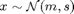

Contents
lossT.m
Summary: Test derivatives of cost functions. It is assumed that the cost function computes (at least) the mean and the variance of the cost for a Gaussian distributed input 
function [dd dy dh] = lossT(deriv, policy, m, s, delta)
Input arguments:
deriv desired derivative. options: (i) 'dMdm' - derivative of the mean of the predicted cost wrt the mean of the input distribution (ii) 'dMds' - derivative of the mean of the predicted cost wrt the variance of the input distribution (iii) 'dSdm' - derivative of the variance of the predicted cost wrt the mean of the input distribution (iv) 'dSds' - derivative of the variance of the predicted cost wrt the variance of the input distribution (v) 'dCdm' - derivative of inv(s)*(covariance of the input and the predicted cost) wrt the mean of the input distribution (vi) 'dCds' - derivative of inv(s)*(covariance of the input and the predicted cost) wrt the variance of the input distribution cost cost structure .fcn function handle to cost .<> other fields that are passed on to the cost m mean of the input distribution s covariance of the input distribution delta (optional) finite difference parameter. Default: 1e-4
Output arguments:
dd relative error of analytical vs. finite difference gradient dy analytical gradient dh finite difference gradient
Copyright (C) 2008-2013 by Marc Deisenroth, Andrew McHutchon, Joe Hall, and Carl Edward Rasmussen.
Last modified: 2013-05-30
function [d dy dh] = lossT(deriv, cost, m, S, delta)
Code
% create a default test if no input arguments are given if nargin == 0; D = 4; m = randn(4,1); S = randn(4); S = S*S'; cost.z = randn(4,1); W = randn(4); W = W*W'; cost.W = W; cost.fcn = @lossQuad; deriv = 'dLdm'; end D = length(m); if nargout < 5; delta = 1e-4; end % check derivatives switch deriv case {'dLdm', 'dMdm'} [d dy dh] = checkgrad(@losstest01, m, delta, cost, S); case {'dLds', 'dMds'} [d dy dh] = checkgrad(@losstest02, S(tril(ones(D))==1), delta, cost, m); case 'dSdm' [d dy dh] = checkgrad(@losstest03, m, delta, cost, S); case 'dSds' [d dy dh] = checkgrad(@losstest04, S(tril(ones(D))==1), delta, cost, m); case {'dCdm', 'dVdm'} [d dy dh] = checkgrad(@losstest05, m, delta, cost, S); case {'dCds', 'dVds'} [d dy dh] = checkgrad(@losstest06, S(tril(ones(D))==1), delta, cost, m); end
function [f, df] = losstest01(m, cost, S) % dLdm [L dLdm] = cost.fcn(cost, m, S); f = L; df = dLdm; function [f, df] = losstest02(s, cost, m) % dLds d = length(m); ss(tril(ones(d))==1) = s; ss = reshape(ss,d,d); ss = ss + ss' - diag(diag(ss)); [L dLdm dLds] = cost.fcn(cost, m, ss); f = L; df = dLds; df = 2*df-diag(diag(df)); df = df(tril(ones(d))==1); function [f, df] = losstest03(m, cost, S) % dSdm [L dLdm dLds S dSdm] = cost.fcn(cost, m, S); f = S; df = dSdm; function [f, df] = losstest04(s, cost, m) % dSds d = length(m); ss(tril(ones(d))==1) = s; ss = reshape(ss,d,d); ss = ss + ss' - diag(diag(ss)); [L dLdm dLds S dSdm dSds] = cost.fcn(cost, m, ss); f = S; df = dSds; df = 2*df-diag(diag(df)); df = df(tril(ones(d))==1); function [f, df] = losstest05(m, cost, S) % dCdm [L dLdm dLds S dSdm dSds C dCdm] = cost.fcn(cost, m, S); f = C; df = dCdm; function [f, df] = losstest06(s, cost, m) % dCds d = length(m); ss(tril(ones(d))==1) = s; ss = reshape(ss,d,d); ss = ss + ss' - diag(diag(ss)); [L dLdm dLds S dSdm dSds C dCdm dCds] = cost.fcn(cost, m, ss); f = C; dCds = reshape(dCds,d,d,d); df = zeros(d,d*(d+1)/2); for i=1:d; dCdsi = squeeze(dCds(i,:,:)); dCdsi = dCdsi+dCdsi'-diag(diag(dCdsi)); df(i,:) = dCdsi(tril(ones(d))==1); end;